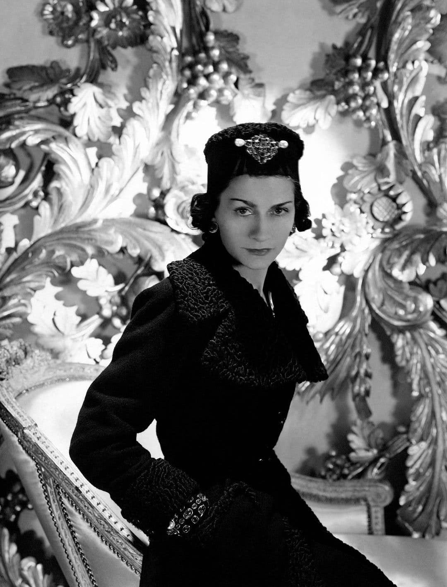
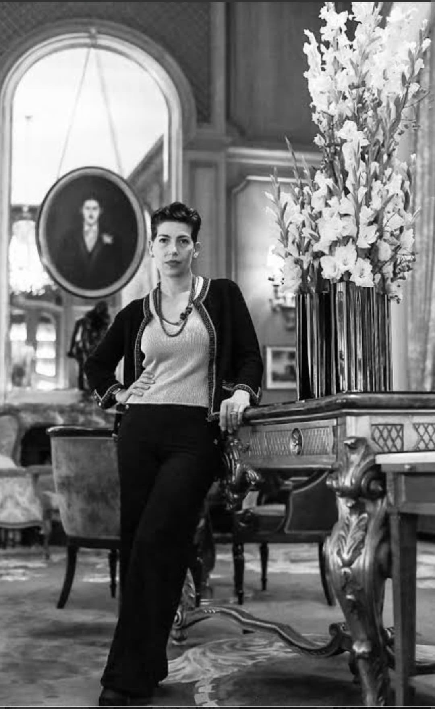
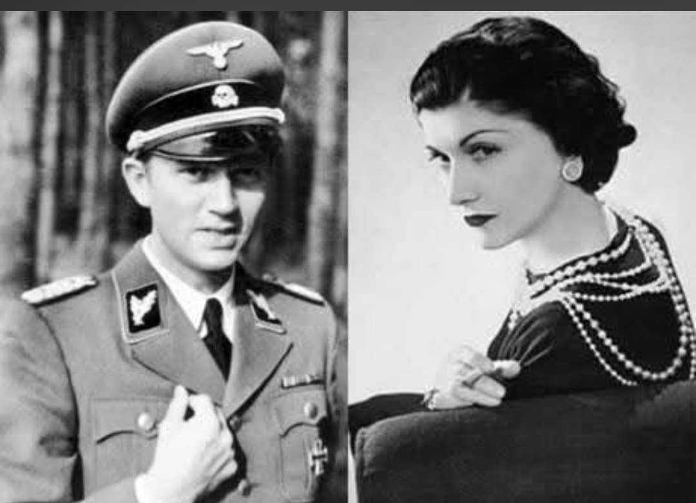
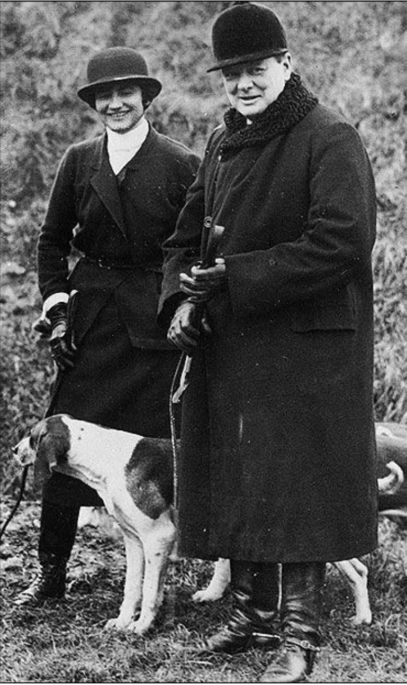
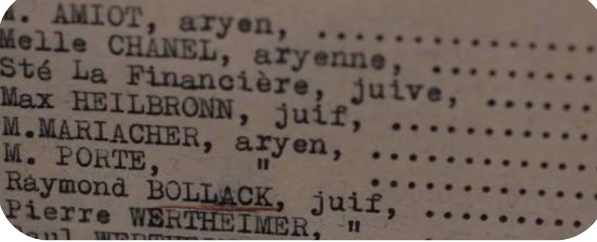
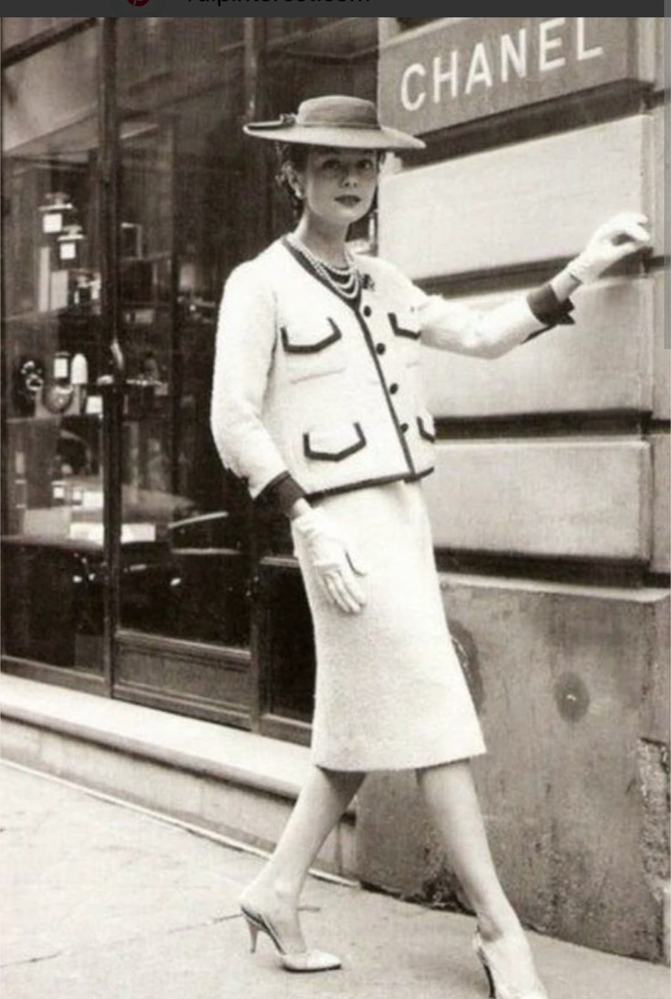

COCO
CHANEL
Histoire & Mémoire
Introduction

Coco Chanel (1883–1971) est l’une des figures les plus célèbres du XXᵉ siècle.
Pendant la Seconde Guerre mondiale, son rôle est marqué par l’opportunisme,
la proximité avec l’occupant et une implication documentée dans des activités
liées au renseignement allemand. Elle incarne une zone grise de l’Occupation.
Cette fiche présente les faits historiques établis, replacés dans le cadre
muséal Histoire & Mémoire du Musée HOP WW2.
Contexte : le Ritz sous l’Occupation

En 1939, Chanel ferme sa maison de couture. Pendant l’Occupation, elle réside
au Ritz, un lieu fréquenté par les officiers allemands. Son environnement
devient directement lié à l’occupant, ce qui influence son rôle durant la période.
Cette proximité place Chanel dans une position ambiguë, loin de l’image
uniquement artistique souvent présentée après-guerre.
Relations avec l’Abwehr

Chanel entretient une relation avec Hans Günther von Dincklage, officier
de l’Abwehr. Les archives allemandes la répertorient comme agent F‑7124,
nom de code Westminster. Elle bénéficie d’un statut privilégié
sous l’Occupation.
Cette mention dans les documents de renseignement constitue l’un des éléments
les plus importants de son dossier historique.
L’opération « Modèle » (1943)

En 1943, l’Abwehr tente d’utiliser Chanel dans une opération visant à approcher
le Royaume‑Uni pour explorer une paix séparée. Chanel accepte de servir
d’intermédiaire via ses contacts britanniques.
L’opération échoue, mais son implication est documentée dans les archives
de renseignement allemandes.
Chanel N°5 et les lois antisémites

Les propriétaires de la société du parfum Chanel N°5, les frères Wertheimer,
sont issus d’une famille juive. Chanel tente d’utiliser les lois antisémites
de Vichy pour récupérer la société.
Les Wertheimer anticipent cette manœuvre en transférant la propriété à un
associé non-juif, bloquant ainsi la tentative. Cet épisode illustre un
opportunisme directement lié au cadre légal discriminatoire de la période.
Après-guerre : image reconstruite

À la Libération, Chanel est interrogée mais jamais poursuivie. Elle quitte
la France pour la Suisse, puis revient en 1954 relancer sa maison de couture.
Son image publique est progressivement reconstruite, effaçant largement
son rôle durant l’Occupation.
Mémoire : une figure de zone grise

Coco Chanel incarne les zones grises de la Seconde Guerre mondiale :
proximité avec l’occupant, relations avec l’Abwehr, opportunisme et
tentative d’utiliser les lois raciales.
Sa place dans le Musée HOP WW2 est donc dans Histoire & Mémoire,
et non dans la galerie des Visages.